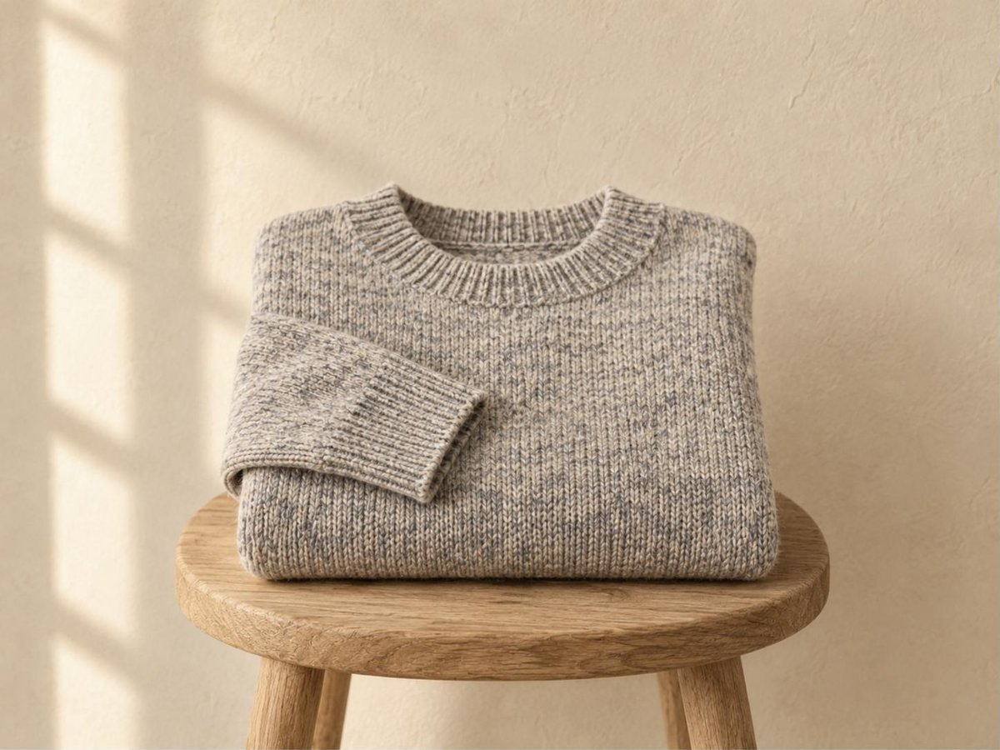

Every piece below is made by a creator who carries the EcoWear label. The creator ships it to you, and the certificate number on each card lets you check the label. Click "Quick facts" to see what each piece is made of.
Sea-Glass Wire Cuff
by Shoreline Studio, Marseille
€35
Wrapped by hand from recovered copper wire, sea glass and leather offcuts.
Made from recovered materials only
Certified · EW-2026-011
Materials: recovered copper wire, sea glass and leather offcuts
Made in: Marseille, one piece at a time
Packaging: recycled cardboard, no plastic
Repair: free re-wrapping for life
Patchwork Pouch
by Studio Retaille, Lyon
€29
A zipped pouch sewn from the printed-cotton offcuts of Lyon workshops.
Made from offcuts: no new fabric
Certified · EW-2026-014
Materials: cotton offcuts and a deadstock zip
Made in: Lyon, Croix-Rousse
Packaging: a reused paper bag
End of life: send it back, we reuse the fabric
Second-Life Denim Jacket
by Indigo Second, Lyon
€140
Cut from five pairs of old jeans collected in Lyon.
Made from old jeans: no new fabric
Certified · EW-2026-003
Materials: five pairs of old jeans
Made in: Lyon
Repair: free repairs for two years
End of life: taken back by the creator
Linen Summer Shirt
by Northern Linen, Lille
€95
Undyed European linen, light and breathable.
Footprint: about 8.4 kg CO2e (estimate)
Certified · EW-2026-008
Materials: European linen, no dye
Made in: Lille
Care: wash at 30°C, dry in the air
Repair: spare buttons sewn inside
Organic Cotton Tee
by Fair Cotton, Nantes
€38
A soft T-shirt in organic cotton, made in small batches.
Footprint: about 4.2 kg CO2e (estimate)
Certified · EW-2026-019
Materials: 100% organic cotton
Made in: Nantes, in batches of 50
Packaging: no plastic
End of life: taken back for recycling

Recycled Wool Sweater
by True Wool, Annecy
€110
Knitted from recycled wool, sorted by color so that no new dye is needed.
Footprint: about 8.4 kg CO2e (estimate)
Certified · EW-2026-006
Materials: recycled wool
Made in: Annecy
Care: hand wash, dry flat
Repair: holes mended for free
Supply chain profiles
What the auditor checked for three of our pieces, stage by stage.
Second-Life Denim Jacket · Indigo Second
Collection: old jeans given by Lyon residents and by a second-hand shop.
Sorting and washing: sorted by shade and washed in a laundry in Villeurbanne.
Cutting and sewing: five pairs of jeans for each jacket, cut and sewn in the creator's Lyon workshop.
Packaging and delivery: reused boxes, by bike courier in Lyon or by parcel.
After the sale: free repairs for two years, and old jackets taken back.
Lyon · no new fabric · last audit September 2026 · score 26/30 · EW-2026-003
Linen Summer Shirt · Northern Linen
Fiber: flax grown in Normandy, where rain is enough to water it.
Spinning and weaving: in a linen mill in Lithuania.
Dyeing: none. The shirt keeps the natural color of flax.
Sewing: in the creator's workshop in Lille.
Delivery: by parcel, in recycled cardboard.
Normandy, Lithuania, Lille · last audit October 2026 · score 22/30 · EW-2026-008
Patchwork Pouch · Studio Retaille
Fabric: printed-cotton offcuts collected from three textile workshops in Lyon.
Zip: deadstock zips bought from a haberdasher that closed down.
Sewing: in the creator's studio in the Croix-Rousse district of Lyon.
After the sale: worn pouches taken back, and their fabric reused.
Lyon · offcuts only · last audit November 2026 · score 23/30 · EW-2026-014
Carbon footprint calculator
Choose a garment, the kind of material the creator uses, a quantity and the distance it travels to you. We compare your order with the same garments made from conventional new materials.
How we calculate
Conventional garments. ADEME, the French agency for ecological transition, estimates that a cotton T-shirt emits about 6 kg of CO2 over its life, a shirt or a cotton sweater about twice as much, and a cotton sweatshirt about 30 kg (source: L'info durable, in French).
Materials. Our estimates: organic or recycled fibers keep 70% of this footprint, and upcycled or deadstock fabric keeps 20%, because the fabric already exists. Our auditors will refine these figures creator by creator.
Delivery. Weight of the garment (0.2 kg for a T-shirt, 0.3 kg for a shirt, 0.5 kg for a sweater, 0.6 kg for a sweatshirt) x distance x 0.0675 kg CO2e per tonne and per km by truck, the ADEME Base Carbone factor (source: Banque de France, freight method).